Week11
Photo OCR
Problem description and pipeline
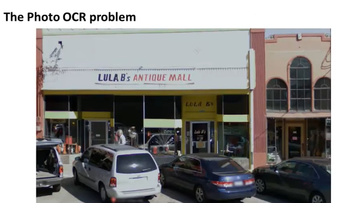
And then finally, the Photo OCR problem also gives me an excuse to tell you about just a couple more int omputer vision problems, and second is the idea of artificial data synthesis, which we'll see in a couple of videos. So, let's start by talking about what is the Photo OCR problem.
Photo OCR stands for Photo Optical Character Recognition.
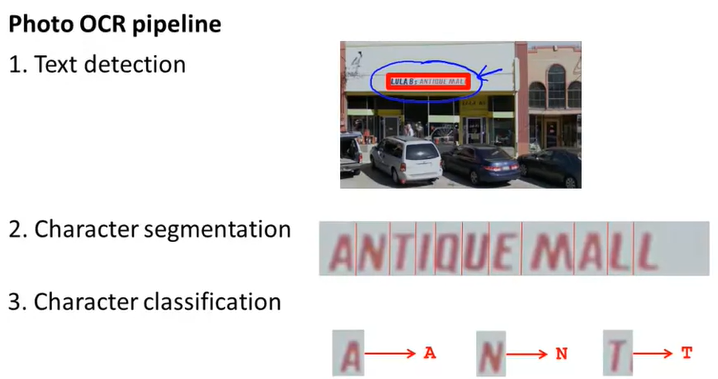
System like this is called machine learning pipeline
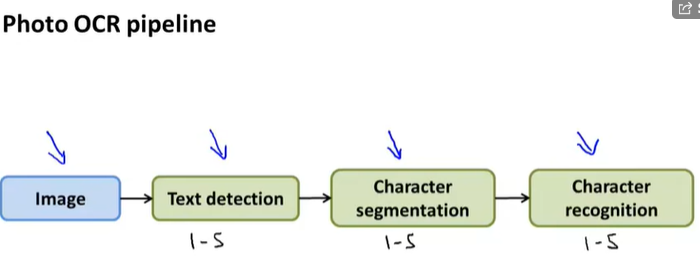
Sliding Windows classifier

specific aspect ratio
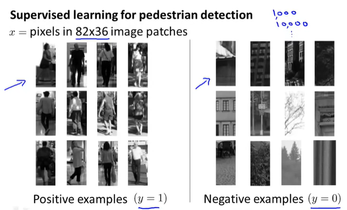
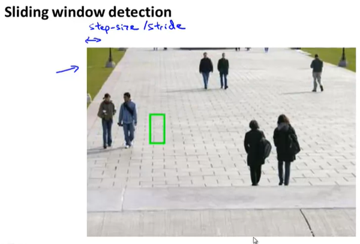
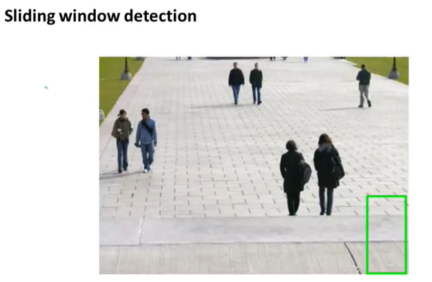
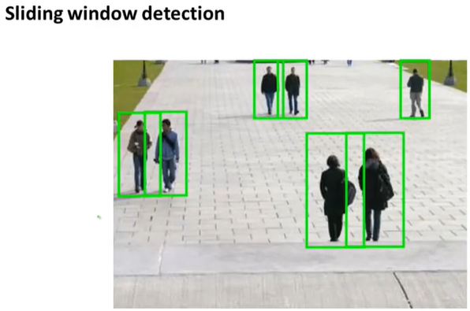
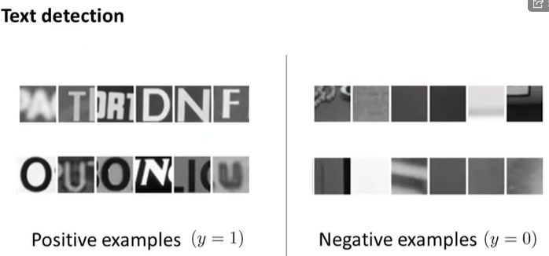
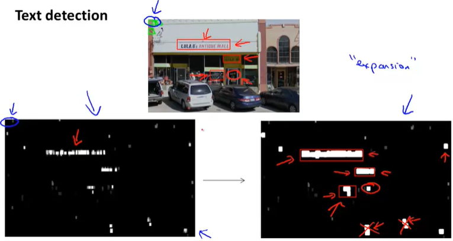
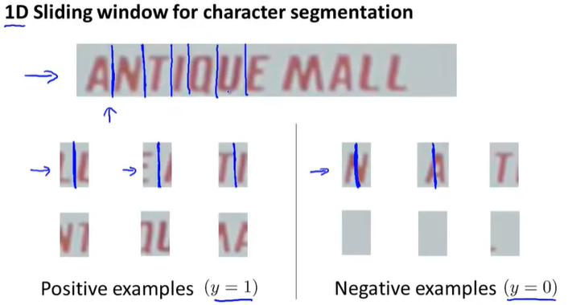
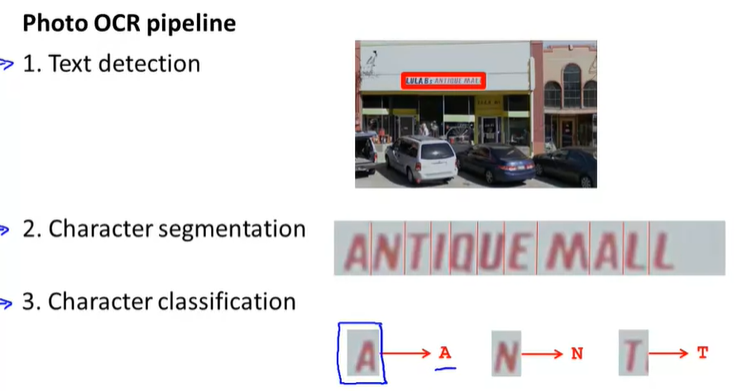
Getting lots of data and artificial Data synthesis
low bias learning algo and train iton a assive training set
The idea of artificial data synthesis comprises of two variations, main the first is if we are essentially creating data from [xx], creating new data from scratch.
And the second is if we already have it's small label training set and we somehow have amplify that training set or use a small training set to turn that into a larger training set and in this video we'll go over both those ideas.
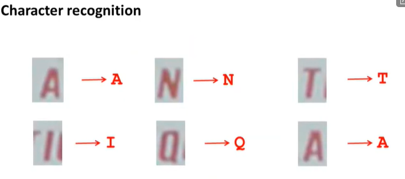
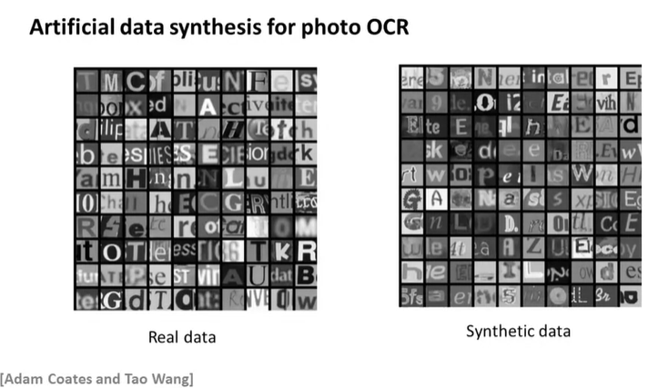
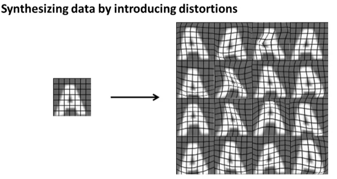
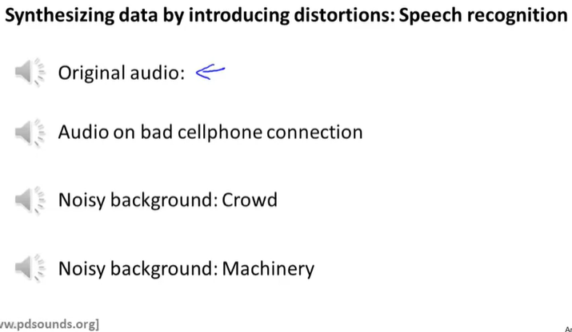
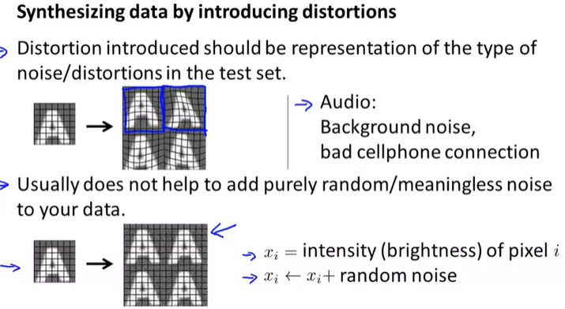
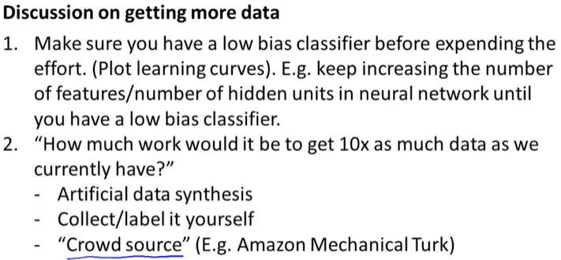
Ceiling analysis : What part of the pipeline to work on next
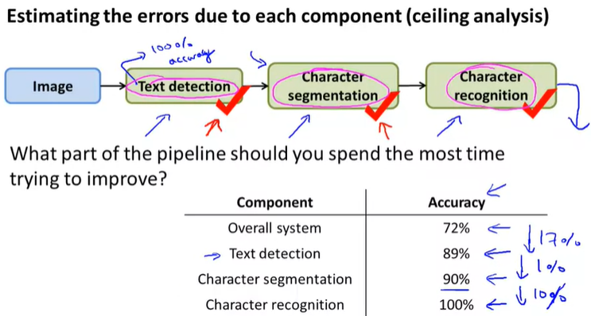
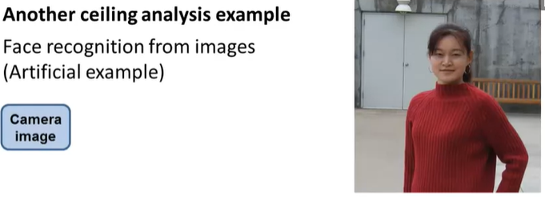
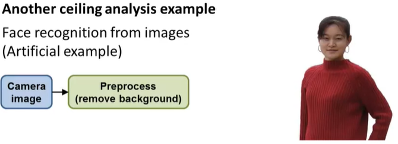
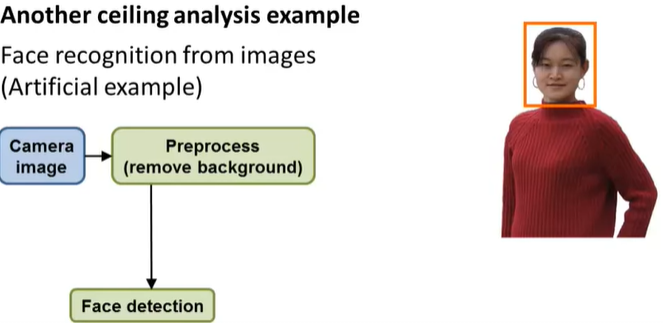
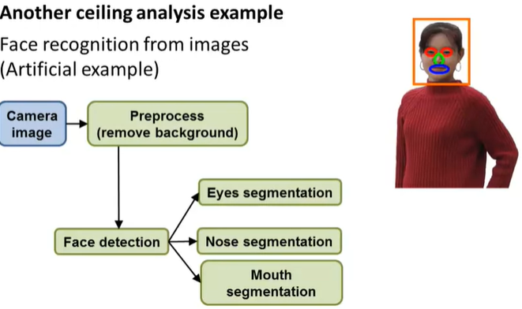
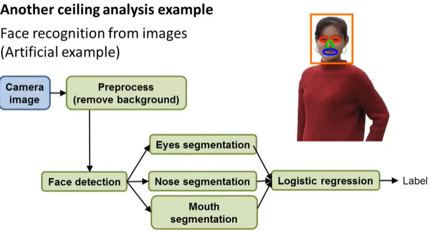
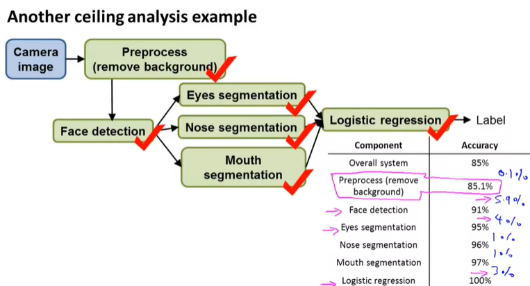